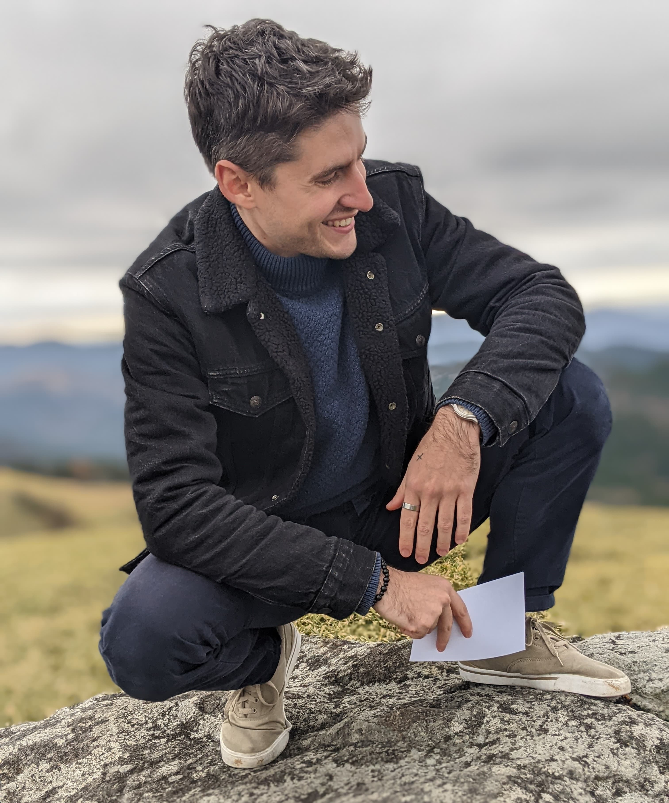

Bio
Kinésithérapeute, chercheur et enseignant, je suis spécialisé dans le domaine du vieillissement actif.
Je travaille dans les champs de la rééducation, des sciences du sport et des neurosciences,
à l’interface entre la pratique clinique appliquée et la recherche basée sur les données.
Je m’intéresse au maintien de l’autonomie et à la lutte contre la fragilité.
J’utilise des approches ludiques, parfois basées sur l’exergaming ou les technologies d’actimétrie.
Curieux et mobile, j’ai vécu et travaillé en France, au Japon et en Suisse. Passionné par les animaux, je suis aussi un grand amateur de sport, notamment d’activités de plein air et d’arts martiaux.
Pour plus d’informations détaillées et à jour sur mon travail, veuillez consulter mon CV. Vous pouvez également suivre mes dernières aventures dans la section actualités. N’hésitez pas à me contacter pour toute question, discussion ou opportunité de collaboration !
Recherche
Je crois fermement à la necessité d’une recherche clinique translationnelle et impactante. Dans cet esprit, je m’engage activement auprès de la communication scientifique — aussi bien des spécialistes que du grand public — et je participe à des initiatives de science ouverte. Voici brièvement mes projets passés et actuels; vous trouverez plus de details sur mes travaux dans la section productions.

En tant que postdoc à l’Université de Tokyo, j’étudiais l’activité cérébrale mesurée par IRM fonctionnel.
L’objectif était d’évaluer si, et comment, la présentation de différents stimuli — en conditions unimodales ou multimodales —
pouvait améliorer la précision prédictive de divers modèles d’encodage et de décodage
[1].
L’usage intensif des outils d’apprentissage automatique m’a permis d’acquérir des compétences en programmation,
dont une grande partie est disponible en libre accès sur GitHub
[2]
[3].

Le projet drePAnon [1]
est une collaboration internationale entre Dakar, Lyon et Tokyo, à laquelle j’ai participé en tant que postdoc à l’Université d'Ochanomizu.
De 2019 à 2023, nous avons recruté plus de 100 patients atteints de drépanocytose à Dakar
et évalué l’impact de leur activité physique sur divers facteurs biomédicaux, dont des marqueurs d’inflammation et de douleur.
Jusqu’à présent, l’intensité de l’activité physique ne semble pas être associée à la gravité des complications cliniques
[2].
Si ces résultats se confirment, ils pourraient avoir d’importantes implications cliniques en encourageant l’activité physique dans cette population.

De 2019 à 2022, nous avons conçu, développé et évalué l’efficacité d’un exergame personnalisé
[1] ciblant les capacités cognitivo-motrices des personnes âgées.
Ce projet INCOME faisait partie de ma thèse au laboratoire HAVAE [2],
et a mobilisé 3 animateurs, 40 participants et plusieurs étudiants.
Globalement, nous avons montré que notre exergame était utilisable, comparable à une solution plus usuelle
[3],
et améliorait les fonctions cognitives et maintenait les capacités motrices chez les personnes âgées
[4].
Surtout, nous avons démontré que cette solution sur mesure était bien accueillie par tous les utilisateurs — aussi bien joueurs qu’encadrants
[5].
Ces résultats prennent encore plus de sens car ils ont été obtenus durant la pandémie de COVID-19 et les confinements associés.
Enseignement
J’enseigne aux étudiants en pré- et post-grade de bachelor de physiotheérapie, ainsi qu'en master de sciences de la santé,
avec un focus sur la gériatrie, la pratique clinique et la méthodologie de recherche.
Je priorise une pédagogie active et un apprentissage pratique, ciblé et basé sur des projets.
J’encadre également des mémoires de licence et de master.
Aux étudiant.e.s : j’essaie de répondre autant que possible aux questions liées aux projets de recherche, stages ou cours.


Liens
Voici quelques liens vers différentes plateformes. Notez qu’ils sont automatiquement mis à jour par des algorithmes et peuvent contenir des erreurs.